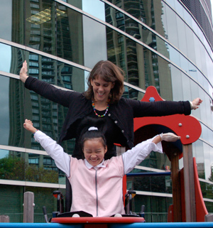

Children currently account for 50 to 60 percent of the total burn-injured population in China alone, estimated to be well over 10 million, with 450,000 to 1,600,000 new untreated children being added to the ranks each year for lack of funds or available care. These children are but a few of the many HandReach has helped.
Zhou Lin
Chinese New Year of 2003 was a dark one for the Zhou family, farmers in a poor area of Sichuan Province -- the electricity had been out for days -- so 11-year-old Zhou Lin and her 4-year-old sister were dispatched to the kerosene dealer to buy some fuel for the family lamp. Little did they realize the fuel mixture had been tampered with; the dealer mixed in some gasoline, a cheaper fuel, to raise the profit margin. Once back in the family kitchen, the fuel combusted, engulfing both girls in an explosion of fire. While the father saved the life of his 4-year-old daughter, covered in flames, 11-year-old Zhou Lin tried to exit the room and remove her burning pants -- only the pants were made of highly flammable fabric, and her legs, hands, and pants all melted together.
Zhou Lin's family scraped together all their savings and borrowed from everyone they could find -- family, friends, neighbors, even strangers -- and came up with enough for the live-saving graft surgeries for both girls. The kerosene dealer, who had been nabbed in a class-action suit over the faulty fuel mixture and was purportedly responsible for the family's medical bills, bribed the local government not to enforce the verdict, leaving the Zhou family in over $11,000 of debt. Zhou Lin was released from the hospital prematurely without any rehabilitation therapy and transported home, still at high risk of infection. Left in a bed at home for months, Zhou Lin's feet contracted outward into a painful extended position and left her crippled.
Deeply in debt, unable to pay for basic expenses, and desperate to get care for their badly-disabled daughter, the Zhou family begged their passage all the way to Beijing, where they appealed at eight government offices and were refused at every door. Finally, they made their way to the sidewalk in front of China Central Television's main headquarters, where they hoped against hope to gain the interest of a reporter and let the court of public opinion decide their case. Yet they were mired in a sea of other beggars with compelling cases of their own. Days passed without money, justice, or a shred of hope.
In October 2004, American graduate student Brecken Chinn Swartz encountered the family begging on the street and was stunned by their situation. Unable to do anything medically for Zhou Lin, Brecken offered the family a $200 HandReach grant to afford the modest tuition to put their daughters back into school. The family gratefully accepted and returned to Sichuan to put their daughters back into elementary school -- Zhou Lin had to be carried on her mother's back over the long distance to school. Back in school finally, both girls were soon at the tops of their classes. Zhou Lin's mother circulated with Brecken's business card, searching for a way to contact her again, finally finding a local teacher willing and able to send an email across the world -- an email that would change Zhou Lin's life forever.
Two years later, in June 2006, Zhou Lin arrived at Boston's Shriners Hospital, the grateful recipient of free air tickets from American Airlines and full support from the Shriners network. She was in the hospital for about half a year, receiving twelve reconstructive surgeries, including the amputation of her badly-deformed feet and months of training on custom-built prosthetics. Zhou Lin's family asked for her to be able to remain in the US to continue medical treatment and rehab therapy, and Brecken and her husband Bill became the proud adoptive parents of Zhou Lin in December 2007.
While at Shriners, Zhou Lin asked one day, "Why don't we have hospitals like this in China?" Brecken pondered the question, and discussed with other international parents with children at the Shriners burn unit the idea of creating a Children's Healing Initiative, a special project of HandReach to provide training and infrastructure to hospitals in the developing world that could allow burn-injured children to receive state-of-the-art medical care and rehabilitation much closer to home. Local Boston musicians chipped in their original music to create a benefit CD, Boston-based organizations Hospitality Homes and Cambridge Co-housing helped Zhou Lin hold an auction of her hospital artwork, and church congregations from Boston to Washington DC held special offerings. By 2007, Zhou Lin's family's debts were paid off, Zhou Lin was walking beautifully on her prosthetic feet and earning straight A's in an American high school, and the Children's Healing Initiative was born.
Today, Zhou Lin travels with HandReach during school breaks to provide translation and cultural support for international medical and rehabilitation teams working with young burn survivors in China. "It feels good to help kids in the same situation, because I can understand what they are going through," she says. Zhou Lin is the inspiration for the Children's Healing Initiative, and her courage, bright spirit, and sense of humor and perspective continue to inspire our entire team.
Click here to learn more about Zhou Lin's story.
Wang YunFei (FeiFei)
.jpg)
Chinese New Year is the longest and most important of the traditional Chinese holidays. New Year's Eve functions as a reunion for many families whose members are extended across the country; unsurprisingly, travel soars in China during this time. Perhaps this chaotic atmosphere explains why a mentally ill grandfather was able to leave his infant granddaughter, FeiFei, on the train tracks at Chongqing Station without raising alarm. No one noticed FeiFei until it was too late; a train bore down on top of the infant, severing both of her legs.
Against all the odds, FeiFei survived her misguided grandfather's actions. She was able to meet all developmental milestones as a toddler, learning to walk with the help of custom prosthetics and rehabilitation provided by the Shriners Orthopedic Hospital for Children in Springfield, Massachusetts. FeiFei will continue to receive new prosthetics and rehabilitation programs from the Springfield Shriners as she continues to grow and develop.